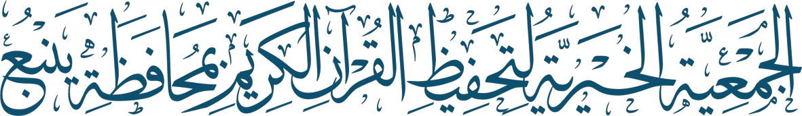
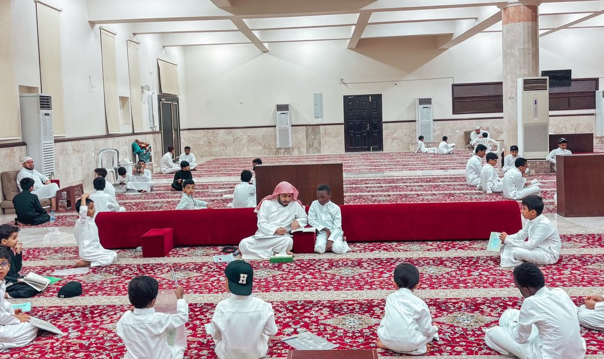
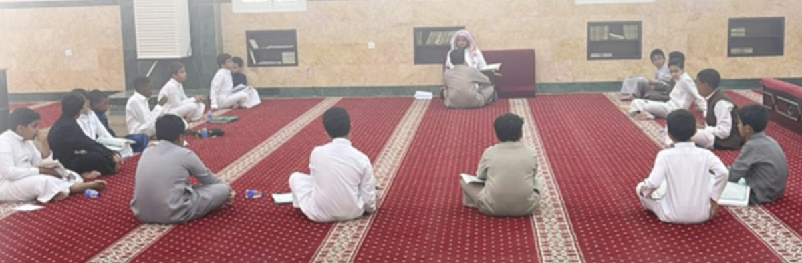
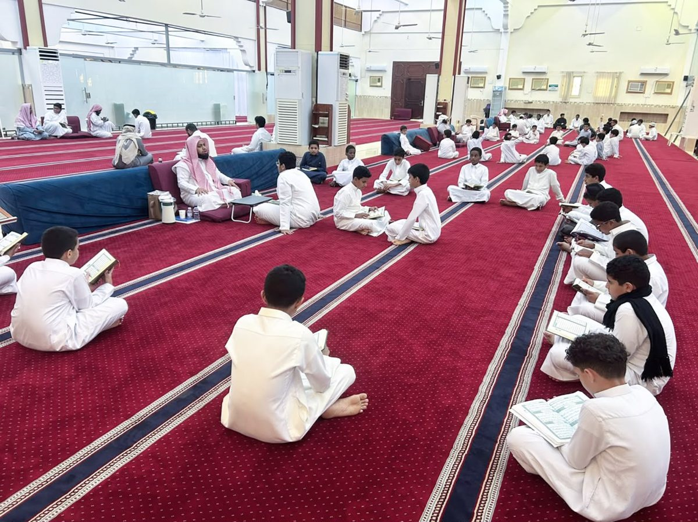

﴿إِنَّ هَٰذَا الْقُرْآنَ يَهْدِي لِلَّتِي هِيَ أَقْوَمُ﴾
بيئة قرآنية منتظمة في أحياء ينبع

مقترح مشروع · مسار المنح النوعي · مجال القرآن
المجمعات القرآنية
تشغيل أربعة مجمعات قرآنية تضم 28 حلقة وأكثر من 500 طالب لمدة ثمانية أشهر
مقدَّم إلى مؤسسة سليمان أبانمي الأهلية
المشروع في أرقام
أربعة مجمعات تخدم 513 طالباً
4
مجمعات قرآنية
في أربعة أحياء بالمحافظة
28
حلقة قرآنية
بإشراف مدير لكل مجمع
513
طالباً منتظماً
من طلاب المراحل الدراسية
308,000
ريال
لثمانية أشهر دراسية
مشروع المجمعات القرآنية · 2
المشكلة والحاجة
حلقات قائمة يهددها انقطاع الكفالة
تعمل المجمعات الأربعة منذ 1437هـ في جوامع أحياء مكتظة بالطلاب، بمتوسط 18 طالباً في الحلقة. وتكلفتها الأساسية مكافآت المعلمين والمديرين، وهي التزام شهري لا تغطيه موارد الجمعية الذاتية. وانقطاع الكفالة شهراً واحداً يوقف الحلقة ويفقد الطلاب انتظامهم، وهو ما لا يُستعاد بسهولة.
الفئة المستهدفة
513 طالباً من طلاب المراحل الدراسية في أحياء ج16 وج21 والهجاري والعمودي
مجمعات مرخّصة
لكل مجمع تصريح افتتاح معتمد من مجلس إدارة الجمعية، أقدمها منذ 1437هـ
ما تطلبه الجمعية
كفالة التشغيل ثمانية أشهر، مع أدوات قياس تثبت أثر كل ريال.
مشروع المجمعات القرآنية · 3
التوافق مع الأولويات
مشروع في قلب خطة الجمعية وأولويات المؤسسة
مؤسسة سليمان أبانمي
مجال القرآن · المسار النوعي
تعليم القرآن حفظاً وتلاوة وتجويداً، بقياس موثق للأثر وتقارير دورية.
الخطة الاستراتيجية للجمعية
تحقيق الاستدامة في تحفيظ القرآن
يدعم مؤشر «عدد المجمعات القرآنية» المستهدف رفعه إلى 6 مجمعات في 2027.
برنامج الحلقات بالمجمعات والمساجد
55% من تكلفة البرنامج
تكلفته التقديرية 557,819 ريالاً سنوياً، والمطلوب هنا 308,000 ريال للمجمعات الأربعة.
رؤية المملكة 2030
تعزيز القيم والقطاع غير الربحي
غرس القيم الإسلامية في النشء، ورفع أثر الجمعيات الأهلية في المجتمع.
مشروع المجمعات القرآنية · 4
المجمعات الحالية
أوقات بعد العصر حتى المغرب أو العشاء
| أوقات الحلقات | عدد الطلاب | عدد الحلقات | الموقع | المجمع |
|---|---|---|---|---|
| العصر – العشاء | 120 | 8 | ج16 | مجمع جامع أبي عوف |
| العصر – المغرب | 154 | 7 | ج21 | مجمع جامع ابن تيمية |
| العصر – المغرب | 140 | 7 | الهجاري | مجمع جامع ابن عثيمين |
| العصر – العشاء | 99 | 6 | العمودي | مجمع جامع السلام |
| 513 | 28 | الإجمالي |
مشروع المجمعات القرآنية · 5
منجزات قائمة
حصاد فصل دراسي واحد في 1447هـ
14,880
وجه حفظ
حفظ جديد للطلاب
35,840
وجه مراجعة
تثبيت لما حُفظ
40
خريجاً
من القاعدة المدنية للمبتدئين
36
نشاطاً
تربوياً وتحفيزياً
8
خاتمين
للقرآن الكريم كاملاً
مشروع المجمعات القرآنية · 6
القيمة النوعية
أكثر من حلقات: نظام تعليمي يُقاس
مسارات حسب المستوى
القاعدة المدنية للمبتدئين، ثم حلقات التأسيس، فالمتميزين، فالحفاظ. ينتقل الطالب بالاختبار لا بالعمر.
قياس قبلي وبعدي
اختبار تحديد مستوى في البداية، واختبارات كل شهرين، واختبار ختامي يقيس التحسن في الحفظ والتلاوة.
رافد للبرامج النوعية
يُرشَّح المتميزون لفتية المحراب والمسابقات المحلية وحلقة الإجازة.
شراكة مع الأسرة
تقرير شهري لولي الأمر بالحفظ والحضور، فيصبح البيت شريكاً في المتابعة.
مشروع المجمعات القرآنية · 7
من الحلقات
حلقات قائمة تحتاج من يكفلها



مشروع المجمعات القرآنية · 8
أهداف المشروع
ستة أهداف قابلة للقياس خلال ثمانية أشهر
1
انتظام 500 طالب فأكثر بنسبة حضور لا تقل عن 85%
2
تحقيق 32,000 وجه حفظ جديد و75,000 وجه مراجعة
3
تخريج 18 خاتماً للقرآن الكريم كاملاً
4
تأسيس 80 مبتدئاً في القراءة الصحيحة بالقاعدة المدنية
5
رفع درجات التلاوة والتجويد 15% بين الاختبارين القبلي والبعدي
6
ترشيح 40 طالباً متميزاً للمسابقات وفتية المحراب
مشروع المجمعات القرآنية · 9
آلية التنفيذ
ثمانية أشهر من التسجيل إلى التكريم
| المدة | المخرج | المرحلة |
|---|---|---|
| الشهر الأول | اختبار قبلي وتوزيع الطلاب على المستويات | 1اختيار المعلمين وتقسيم الطلاب |
| الأشهر 1–8 | سجل حفظ وحضور وتقرير شهري لولي الأمر | 2الحلقات اليومية والمتابعة الأسبوعية |
| كل شهرين | نتائج اختبارات موثقة | 3الاختبارات الدورية |
| الشهر الثامن | اختبار بعدي وحفل تكريم | 4تحفيز الطلاب وتكريمهم |
| بعد الانتهاء | تقرير منجزات ومالي للمؤسسة | 5التقرير الختامي |
مدة التنفيذ: 8 أشهر دراسية · مكان التنفيذ: حضوري في الجوامع الأربعة
مشروع المجمعات القرآنية · 10
الميزانية
ثلاثة أرباع المنحة مكافآت للمعلمين
المبلغ المطلوب
308,000
ريال سعودي
600 ريال للطالب، أي 75 ريالاً شهرياً
| الإجمالي (8 أشهر) | الشهري | للوحدة شهرياً | العدد | البند |
|---|---|---|---|---|
| 224,000 | 28,000 | 1,000 | 28 حلقة | مكافآت معلمي الحلقات |
| 64,000 | 8,000 | 2,000 | 4 مديرين | مكافآت مديري المجمعات |
| 9,000 | — | 500 | 18 خاتماً | جوائز الخاتمين |
| 6,400 | 800 | 200 | 4 مجمعات | حوافز شهرية للمتميزين |
| 4,600 | — | — | — | حفل التكريم والدروع |
| 308,000 | 36,800 | الإجمالي | ||
محسوبة على الحلقات الفعلية (28 حلقة) ومدة الدراسة (8 أشهر). تتحمل الجمعية المواقع والتجهيزات والمصاحف. الحوافز الشهرية لأوائل كل مجمع.
مشروع المجمعات القرآنية · 11
خيار الدعم الجزئي
يمكن كفالة مجمع واحد أو أكثر
| التكلفة (ريال) | الجوائز | مكافأة المدير | مكافآت الحلقات | المجمع |
|---|---|---|---|---|
| 85,000 | 5,000 | 16,000 | 64,000 (8 حلقات) | مجمع جامع أبي عوف |
| 77,000 | 5,000 | 16,000 | 56,000 (7 حلقات) | مجمع جامع ابن تيمية |
| 77,000 | 5,000 | 16,000 | 56,000 (7 حلقات) | مجمع جامع ابن عثيمين |
| 69,000 | 5,000 | 16,000 | 48,000 (6 حلقات) | مجمع جامع السلام |
| 308,000 | 20,000 | 64,000 | 224,000 | الإجمالي |
تقبل الجمعية الدعم الجزئي، ويُخصَّص المبلغ المعتمد لمجمع بعينه بمركز تكلفة مستقل وتقرير خاص به.
مشروع المجمعات القرآنية · 12
مؤشرات الأداء
مستهدفات تتجاوز أداء 1447هـ
| أداة التحقق | المستهدف (8 أشهر) | خط الأساس (فصل 1447هـ) | المؤشر |
|---|---|---|---|
| كشوف الحلقات | 500 فأكثر | 513 | الطلاب المنتظمون |
| سجل الحضور | 85% فأكثر | يُقاس من الشهر الأول | نسبة الحضور |
| سجل الحفظ | 32,000 | 14,880 | أوجه الحفظ الجديد |
| سجل المراجعة | 75,000 | 35,840 | أوجه المراجعة |
| محاضر الاختبار | 18 | 8 | الخاتمون للقرآن |
| كشوف القاعدة المدنية | 80 | 40 | خريجو القاعدة المدنية |
| الاختبار القبلي والبعدي | +15% | اختبار الشهر الأول | تحسن درجات التلاوة |
خط الأساس لفصل دراسي واحد، والمستهدف لثمانية أشهر (فصلان)، أي ضعف خط الأساس مع زيادة من 5% إلى 12%.
مشروع المجمعات القرآنية · 13
المخاطر والاستدامة
خطة لما قد يتعثر ولما بعد المنحة
| المعالجة | الخطر |
|---|---|
| معلم احتياط لكل مجمع من خريجي برنامج إعداد المعلمين | انقطاع معلم أو اعتذاره |
| جدول مرن في الاختبارات ورمضان، وحوافز شهرية للحضور | تراجع الحضور في مواسم الاختبارات |
| مركز تكلفة مستقل وصرف شهري بالتحويل البنكي | تأخر صرف المكافآت |
كفالة الحلقات: تُدرج المجمعات في برنامج كفالة الحلقات لدى الجمعية بعد المنحة.
شراكة الجوامع: المواقع والخدمات من الجوامع دون تكلفة على المشروع.
حقوق المانح: شعار المؤسسة في المجمعات والحفل، وتقرير ختامي خلال شهر.
مشروع المجمعات القرآنية · 14
ثقة المجتمع
أهل ينبع يكفلون حلقاتهم، والمنحة تكمل ما بدأوه
25
كافلاً من أهل الخير
يكفلون حلقات الجمعية في 1448هـ
253,000
ريال
التزامات كفالة الحلقات للعام الحالي
262
حلقة في المحافظة
تخدم أكثر من 4,000 طالب وطالبة
1437هـ
عام الافتتاح
لأول مجمعين في المشروع
كفالة الأفراد تغطي حلقات متفرقة في المساجد، أما المجمعات فتحتاج دعماً مؤسسياً يغطي حلقاتها ومديريها معاً طوال العام.
مشروع المجمعات القرآنية · 15
شاكرين لكم دعمكم لأهل القرآن
حساب الجمعية (الشؤون التعليمية) – مصرف الراجحي: SA9780000327608010750004
رئيس مجلس الإدارة: د. سلامة بن سليم الرفاعي
مسجلة لدى المركز الوطني لتنمية القطاع غير الربحي برقم 3165
صفحة المشروع